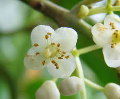

Calophyllaceae
Calophyllum Family
Calophyllaceae is a pantropical family of about 13-14 genera and over 460 species, primarily consisting of evergreen trees and shrubs that characteristically produce latex or resin. They typically have opposite, simple, leathery leaves (often with distinctive fine parallel veins), radially symmetric flowers with numerous stamens, and fruits that are usually drupes or berries (less commonly capsules). This family, formerly part of Clusiaceae sensu lato, belongs to the order Malpighiales.
Overview
The Calophyllaceae family encompasses a significant group of tropical trees and shrubs found across the globe in rainforests and other tropical habitats. A defining characteristic is the presence of latex (usually white or yellow) or resin canals within the plant tissues, often exuding when parts are cut. Members typically possess simple, leathery leaves arranged oppositely on the stem. The leaf venation is often distinctive, particularly the numerous fine, parallel lateral veins seen in the genus Calophyllum.
Flowers are generally radially symmetric with multiple sepals and petals (often 4 of each) and, characteristically, a large number of stamens. The fruit is most commonly fleshy, either a drupe (like Calophyllum) or a berry (Mammea), although some genera produce capsules. Several species are economically important for timber (Calophyllum, Mesua), edible fruits (Mammea americana - Mammee Apple), or valuable oils derived from seeds (e.g., Tamanu oil from Calophyllum inophyllum, used in cosmetics and traditional medicine).
Calophyllaceae was established relatively recently based on molecular phylogenetic data, segregating these genera from the broadly defined Clusiaceae (or Guttiferae). It belongs to the large order Malpighiales and is part of the "clusioid clade," closely related to Clusiaceae, Hypericaceae, Bonnetiaceae, and Podostemaceae.
Quick Facts
- Scientific Name: Calophyllaceae
- Common Name: Calophyllum Family
- Number of Genera: Approximately 13-14
- Number of Species: Approximately 460-480
- Distribution: Pantropical.
- Evolutionary Group: Eudicots - Rosids - Fabids - Malpighiales
- Habit: Resinous or latex-producing trees and shrubs.
Key Characteristics
Growth Form and Habit
Mostly evergreen trees or shrubs. Plants typically produce latex (white, yellow, or clear) or resin in canals throughout the bark, leaves, and other tissues.
Leaves
Leaves are usually arranged oppositely (rarely whorled or alternate), simple, and typically leathery (coriaceous). Margins are generally entire. Venation is often characteristic, notably the numerous, fine, closely parallel lateral veins perpendicular to the midrib in Calophyllum. Leaves frequently contain translucent or dark glandular dots or lines (secretory cavities). Stipules are usually absent or minute.
Flowers
Flowers are arranged in terminal or axillary clusters (cymes, panicles, fascicles) or are sometimes solitary. They are usually bisexual (sometimes unisexual), radially symmetrical (actinomorphic), and often white or yellowish.
- Sepals: Typically 2-6 (often 4 in two opposite pairs), separate, persistent, sometimes petal-like.
- Petals: Typically 4-6 (often 4), separate, usually white or yellowish, sometimes absent.
- Stamens: Distinctively numerous (many, from ~15 to hundreds). Filaments are distinct (free) or sometimes grouped into bundles (fascicles) or fused into a ring at the base. Anthers usually open by longitudinal slits.
- Ovary: Superior, composed of 2-5 (or more) fused carpels. It typically forms either a single locule with basal or parietal placentation OR 2-8 locules with axile placentation. Ovules number from 1 to few per locule or ovary (rarely numerous). A single style is usually present, ending in a broad, peltate, or lobed stigma.
Fruits and Seeds
The fruit is variable but most commonly a fleshy drupe (a stone fruit with a single hard pit containing the seed, like Calophyllum) or a berry (Mammea). Less frequently, the fruit is a dry, dehiscent capsule (Kielmeyera, Caraipa).
Fruits typically contain only 1 or a few large seeds, even if many ovules were present. Seeds usually lack endosperm or have very little; the embryo is large, often with thick, fleshy cotyledons (sometimes oily).
Chemical Characteristics
The family is rich in diverse secondary metabolites associated with their latex and resin canals, including xanthones, coumarins, terpenoids, and tannins. These compounds contribute to the medicinal properties, timber durability, and characteristic scents of various species.
Field Identification
Identifying Calophyllaceae relies on recognizing the combination of tree/shrub habit with latex/resin, opposite leathery leaves often with distinct venation, flowers with numerous stamens, and typically fleshy fruits:
Primary Identification Features
- Habit & Exudate: Tree or shrub producing latex or resin (check cut bark, petiole, or broken leaf).
- Leaves: Usually opposite, simple, entire, leathery. Often exhibit numerous fine, parallel lateral veins (Calophyllum) or glandular dots/lines.
- Flowers: Radially symmetric, usually with 4-6 sepals and 4-6 petals (often white/yellow), and numerous distinct stamens.
- Fruit: Typically a drupe (1-seeded stone fruit) or a berry (fleshy with multiple seeds). Less commonly a capsule.
Secondary Identification Features
- Ovary: Superior, 1-8 locules, typically few ovules.
- Habitat: Predominantly tropical rainforests or woodlands.
- Stamens: Sometimes grouped into bundles (fascicles).
- Sepals: Often persistent at base of fruit.
Seasonal Identification Tips
- Year-round: Evergreen woody habit, opposite leaf arrangement, and characteristic leaf venation or glands are usually always visible. Latex/resin presence can be checked anytime.
- Flowering Season: Flowers with numerous stamens appear seasonally.
- Fruiting Season: The drupe or berry fruits are key identifiers when mature. Capsules (in relevant genera) may persist after seed release.
Common Confusion Points
- Clusiaceae: Very closely related; often distinguished by subtle differences. Clusiaceae (sensu stricto) might have more prominent latex, different stamen bundling patterns, or different ovary/fruit details (e.g., berries with stigmas directly on top). Requires careful checking of technical keys or genus-level knowledge.
- Hypericaceae: More often herbs/smaller shrubs, typically yellow flowers, stamens clearly bundled, fruit usually a capsule. Leaves opposite with translucent dots.
- Bonnetiaceae: Has alternate leaves (vs. usually opposite in Calophyllaceae). Fruit is typically a septicidal capsule.
- Myrtaceae: Also trees/shrubs with opposite leaves and gland dots, but flowers have an inferior ovary, stamens arise from a hypanthium rim, and fruit structure differs. Different order (Myrtales).
- Rhizophoraceae (Mangroves): Often opposite leathery leaves, but adapted to mangrove habitats, flowers usually have fewer stamens (8-12), often inferior ovary, and specialized viviparous fruits/propagules.
The presence of latex/resin, opposite simple leathery leaves (check for parallel veins/glands), numerous stamens, and drupe/berry fruit strongly suggests Calophyllaceae within the clusioid group of Malpighiales.
Field Guide Quick Reference
Look For:
- Tree or shrub with latex or resin
- Leaves usually opposite, simple, entire, leathery
- Often fine parallel lateral veins OR gland dots/lines
- Flowers actinomorphic, often white/yellow
- Numerous stamens
- Superior ovary
- Fruit usually a drupe or berry (sometimes capsule)
Key Variations:
- Leaf venation pattern
- Number of sepals/petals (often 4)
- Stamen arrangement (free vs. fascicled)
- Ovary structure (1 vs. multiple locules)
- Fruit type (drupe/berry vs. capsule)
Notable Examples
The family includes important timber trees, fruit trees, and sources of medicinal oils.

Calophyllum inophyllum
Alexandrian Laurel, Tamanu, Beautyleaf
A widespread coastal tree found throughout the tropical Indian and Pacific Oceans. Recognized by its large, opposite, leathery leaves with distinctive fine, parallel veins. Produces fragrant white flowers with numerous yellow stamens and a round, green drupe fruit. The seed yields Tamanu oil, used in cosmetics and traditional medicine.

Mammea americana
Mammee Apple, Mamey
A tree native to the Caribbean and northern South America, cultivated for its large, edible fruit. The fruit is a large berry with rough brownish skin, orange flesh, and 1-4 large seeds. Leaves are opposite, simple, thick, and leathery. Flowers are white and fragrant.

Mesua ferrea
Ceylon Ironwood, Cobra Saffron, Penaga
A medium to large evergreen tree native to tropical Asia, valued for its extremely hard timber (ironwood). Young leaves emerge bright red or pink, contrasting with the dark green mature foliage. Produces large, fragrant white flowers with numerous golden-yellow stamens. Fruit is a conical capsule-like drupe.
Kielmeyera species
Genus primarily from Brazil (cerrado), often shrubs or small trees with large yellow flowers and woody capsule fruits (unlike the typical drupes/berries of the family).
Phylogeny and Classification
Calophyllaceae belongs to the large and diverse order Malpighiales, situated within the Fabid (eurosid I) clade of Rosids. It is a key member of the "clusioid clade" within Malpighiales, a group characterized by shared chemical constituents (like xanthones) and morphological features (like often numerous stamens and presence of secretory tissues).
This family was segregated from a broadly defined Clusiaceae (or Guttiferae) based on molecular phylogenetic analyses, which showed that the traditional Clusiaceae was not monophyletic. Calophyllaceae forms a well-supported clade that is closely related to Clusiaceae sensu stricto, Hypericaceae (St. John's Wort family), Podostemaceae (Riverweed family), and Bonnetiaceae. Understanding the relationships among these families is crucial for deciphering the complex evolution within Malpighiales.
Position in Plant Phylogeny
- Kingdom: Plantae
- Clade: Angiosperms (Flowering plants)
- Clade: Eudicots
- Clade: Rosids
- Clade: Fabids
- Order: Malpighiales
- Family: Calophyllaceae
Evolutionary Significance
Calophyllaceae is significant for understanding:
- Diversification within Malpighiales: Helps clarify relationships within the species-rich Malpighiales order, particularly the evolution of the clusioid clade.
- Taxonomic Revision: Exemplifies how molecular data has led to the refinement of family boundaries previously based on morphology (segregation from Clusiaceae s.l.).
- Evolution of Chemical Defenses: The production of latex and complex secondary metabolites (xanthones, terpenoids) represents important evolutionary adaptations for defense.
- Tropical Tree Evolution: Represents a major lineage of pantropical trees and shrubs contributing significantly to rainforest biodiversity and structure.
- Fruit Type Evolution: Shows variation in fruit type (drupe/berry vs. capsule) within closely related genera, offering insights into the evolution of dispersal strategies.